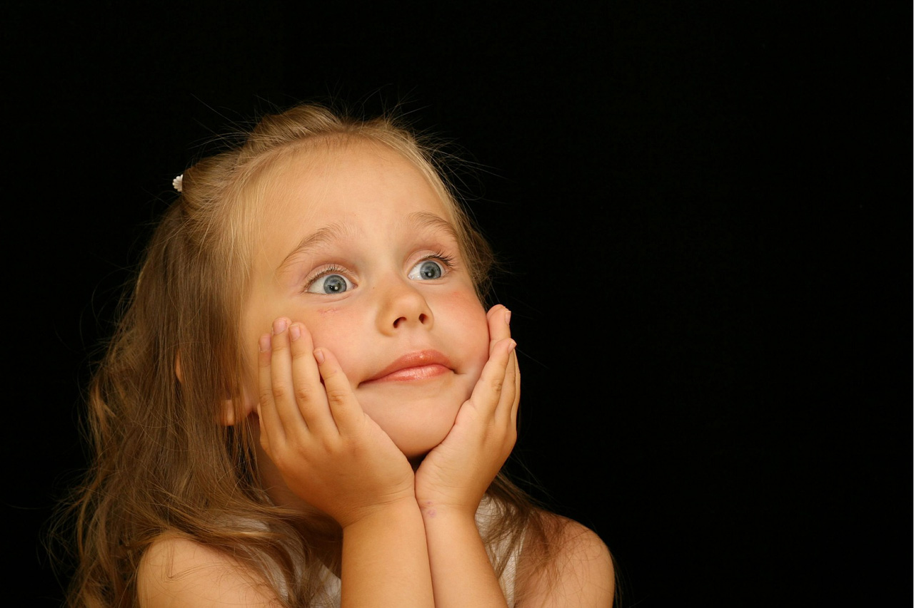

La Ley de la Mirada
Cuando hacemos un retrato (sea éste de una persona o un animal), los ojos son el elemento que más importancia suele adquirir, así que es realmente importante saber cómo deberíamos tratarlos en nuestra fotografía para poder sacar el máximo provecho de su expresividad
Para ello contamos con una regla de composición básica: la ley de la mirada. Pero hay también otras consideraciones que, de tenerlas claras, nos ayudarán enormemente a la hora de mejorar en nuestros retratos.

¿Qué Es la Ley/Regla de la Mirada?
La ley de la mirada es una de las principales reglas de composición fotográfica y consiste, simplemente, en respetar la dirección en la que el modelo de nuestro retrato mira. Es decir, en otras palabras, que a la hora de encuadrar un retrato, deberíamos dejar más espacio por delante del sujeto que por detrás de éste, independientemente de lo amplio o estrecho que sea el encuadre general o del resto de elementos que acompañen a nuestro sujeto en la imagen.
Si queremos respetar la regla de la mirada, deberemos dejar espacio para que el sujeto "mire". Aunque este espacio, aparentemente, esté vacío de significado (sea porque no hay ningún elemento en él o porque los elementos de aquella zona de la imagen se encuentran desenfocados).
¿Qué se consigue haciendo esto? Se consigue darle fuerza expresiva al personaje que aparece en nuestra imagen. Respetando su mirada conseguiremos dotar de interés la acción que hace el protagonista, la acción de mirar. Si respetamos esta básica regla de composición, llamaremos la atención de todo aquel que vea la imagen sobre qué es lo que el sujeto está mirando y, si la composición de nuestra fotografía está bien realizada, conseguiremos que el espectador de la imagen siga ese espacio, en busca de lo que está mirando el personaje de la imagen, aunque esto no aparezca en la fotografía.